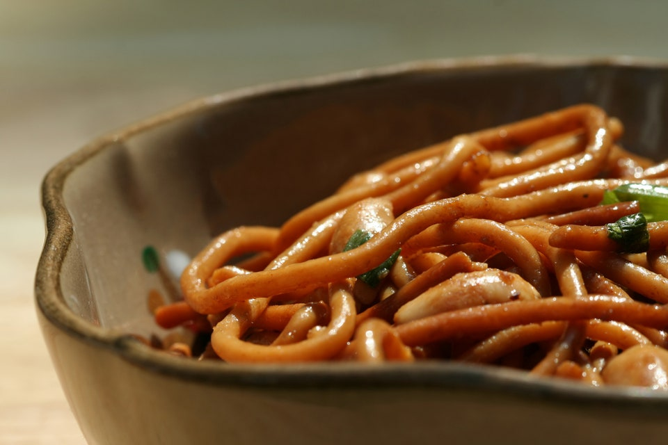

Peanut Sesame Noodles

A Close-Up of a Bowl of Peanut Sesame Noodles.
Peanut Sesame Noodles is an asian favorite that combines creamy peanut butter, soy sauce, sesame oil, chopped garlic all mixed with linguine noodles tossed in this amazingly sweet and savory sauce.
Ingredients
Peanut Dressing
- 1/2 cup smooth peanut butter
- 1/4 cup soy sauce
- 1/3 cup warm water
- 2 tablespoons chopped peeled fresh ginger
- 1 medium garlic clove, chopped
- 2 tablespoons red-wine vinegar
- 1 1/2 tablespoons Asian sesame oil
- 2 teaspoons honey
- 1 teaspoon dried hot red pepper flakes
Noodle Salad
- 3/4 lb dried linguine fini or spaghetti
- 4 scallions, thinly sliced
- 1 red bell pepper, cut into 1/8-inch-thick strips
- 1 yellow bell pepper, cut into 1/8-inch-thick strips
- 3 tablespoons sesame seeds, toasted
Directions
Make Dressing
- Purée dressing ingredients in a blender until smooth, about 2 minutes, then transfer to a large bowl.
Make Salad
- Cook pasta in a 6- to 8-quart pot of boiling salted water until tender. Drain in a colander, then rinse well under cold water.
- Add pasta, scallions, bell peppers, and sesame seeds to dressing, tossing to combine, and serve immediately.